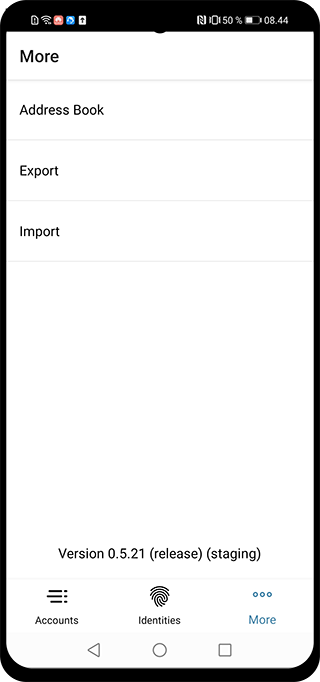
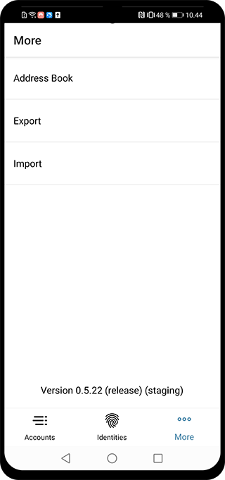

Export and importing IDs and accounts using the mobile wallet¶
Using the mobile wallet it is possible to export your IDs, accounts and address book. This brief guide will show you how it works.
Export¶
The first step of exporting your IDs, accounts and address book, is to go the More menu. The More menu will look slightly different, depending on whether you use iOS or Android. On Android you will see the three options Address Book, Export and Import, while you will only see Address Book and Export on iOS. This will be explained in the Import section of this guide.

To export your data, you of course just press the export option on either platform, taking you to the next page, which will explain that you have to encrypt your exported data with a password. By clicking continue, you will be asked to choose a password for the file. After inputting your password and clicking continue, you will be asked to re-enter your password. When that is done, you will be taken to your phone’s export interface, allowing you to choose what to do with the exported file.
Note
The password you choose on export, will also be the password used to import and make transactions with the [CLI](/testnet/docs/client).


Import¶
The process of importing is slightly different on iOS and Android, because of the way the two systems handle files.
iOS¶
As we saw on one of the first screenshots, iOS did not have an import option in the More menu. Instead, you just open the file you exported from whatever media you chose to share or keep the file with. This will prompt the iOS system to ask you, what you want to do with the file, and in this prompt you just choose to open it with the Concordium mobile wallet app.
Upon choosing the app, you will be asked to enter the password you chose during export. If the password is correct, you will then be asked to authenticate yourself, using your biometrics, passcode or password. If succesful, you will be shown a screen with information about what has been imported.


Android¶
On Android you have the option of choosing Import in the More menu. By clicking that, you can browse to the location, where you keep your exported file. Choosing your imported file, you will be prompted by the app to enter the password chosen during export. If the password is correct, you will be prompted to authenticate with biometrics, passcode or password, which will then lead you to a screen showing the import result.



Concordium Client¶
Exported files from both iOS and Android can also be imported with our CLI, Concordium Client.
Support & Feedback¶
If you run into any issues or have suggestions, post your question or feedback on Discord, or contact us at testnet@concordium.com.